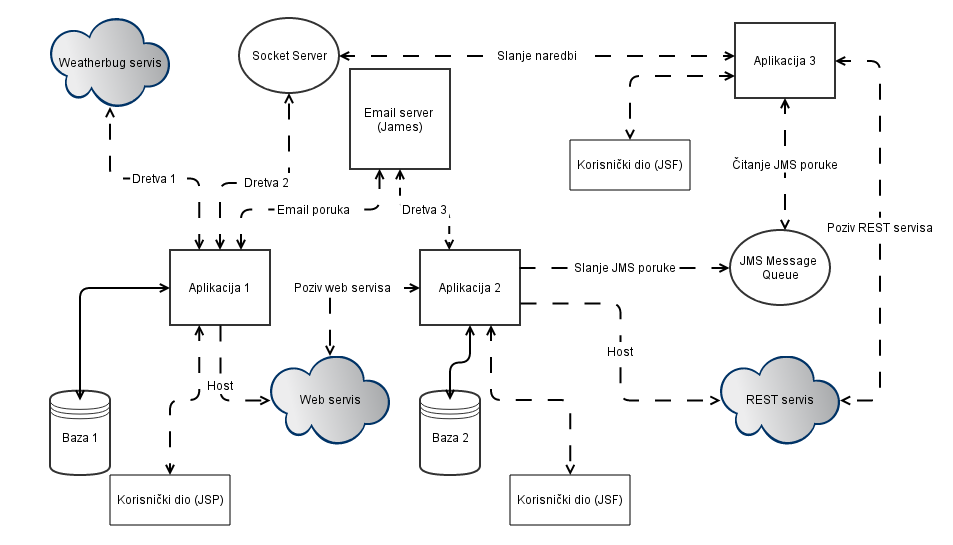

OPIS:
Sustav se sastoji od 3 neovisne aplikacije koje međusobno komuniciraju preko
web servisima (WS i REST), email porukama (James server) te JMS porukama.
Aplikacija 1:
Sastoji se od baze podataka nwtis_lurajcevi_bp_1 čiji ER model je prikazan kasnije.
Pokreće dvije dretve (jednu za weatherbug web servis, a drugu za socket server.
U bazi podataka se nalaze aktivni zip kodovi. To su kodovi za koje se prikupljaju meteorološki
podaci. Popis aktivnih zip kodova se može mijenjati slanjem komandi Socket serveru.
Aplikacija je također zadužena i za hosting web servisa koji komunicira s bazom podataka
te vraća meteorološke podatke (najnovije, filtrirane, najnovijih n itd.). Aplikacija ima
i svoj korisnički dio zaštićen SSL-om u kojemu se mogu pregledavati prikupljeni meteorološki
podaci, zahtjevi prema Socket serveru i zahtjevi prema HTTP serveru.
Aplikacija 2:
Pokreće dretvu koja u pravilnim intervalima dohvaća email poruke s James servera. Poruke
se sortiraju u mape postavljene u konfiguraciji. Također, aplikacija koristi Web servis
koji je hostan u aplikaciji 1 kako bi mogla prikazati meteorološke podatke za korisničke
portfolie. Postoje 2 uloge korisnika - administratorska i korisnička. Administrator ima
mogućnost pregledavanja email poruka i pregledavanja zahtjeva prema HTTP serveru, dok
korisnik samo može pregledavati i kreirati vlastite portfolie.
Aplikacija također hosta REST servis koji na bazi putanje prikazuje popis aktivnih korisnika,
njihovih portfolia te zip kodova u svakom portfoliu.
I ova aplikacija ima svoju bazu podataka nwtis_lurajcevi_bp_2
Aplikacija 3:
Aplikacija 3 nema vlastitu bazu podataka. Ona komunicira s ostale dvije aplikacije preko JMS poruka.
Postoje 2 tipa JMS poruka koje ona prima, te za svaku poruku ima drugu akciju. Aplikacija vrši evidenciju
poruka te ih serijalizira po gašenju aplikacije.
Aplikacija također koristi REST servis iz aplikacije 2, te ga proširuje prikazujući uz sve podatke
iz 2. aplikacije i trenutne meteorološke podatke za odabrani zip kod.